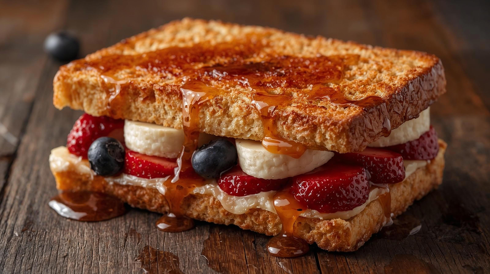
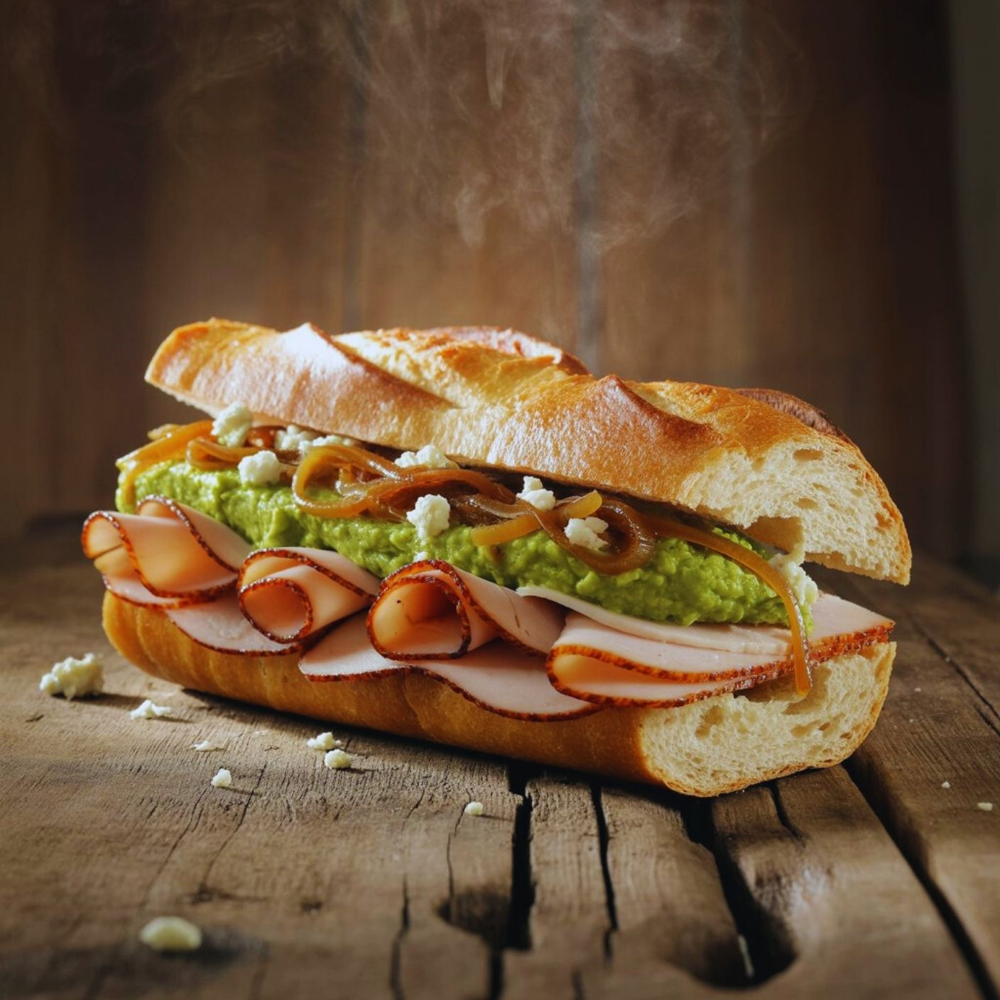
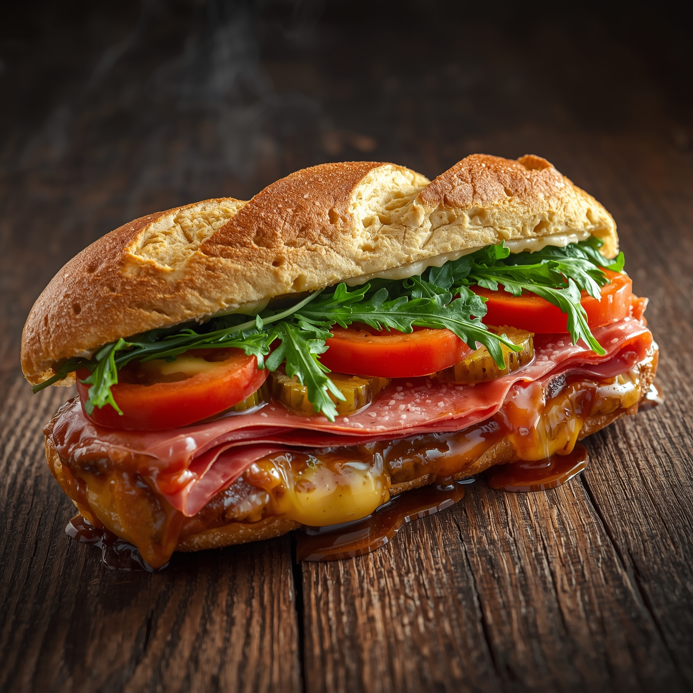
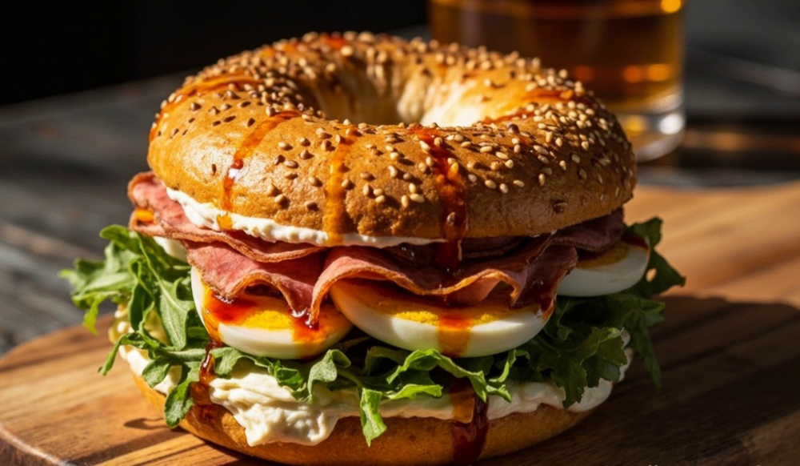
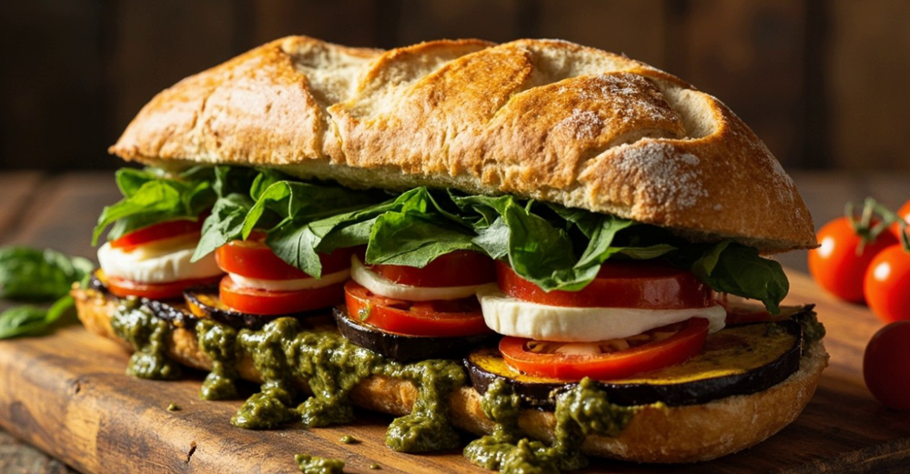
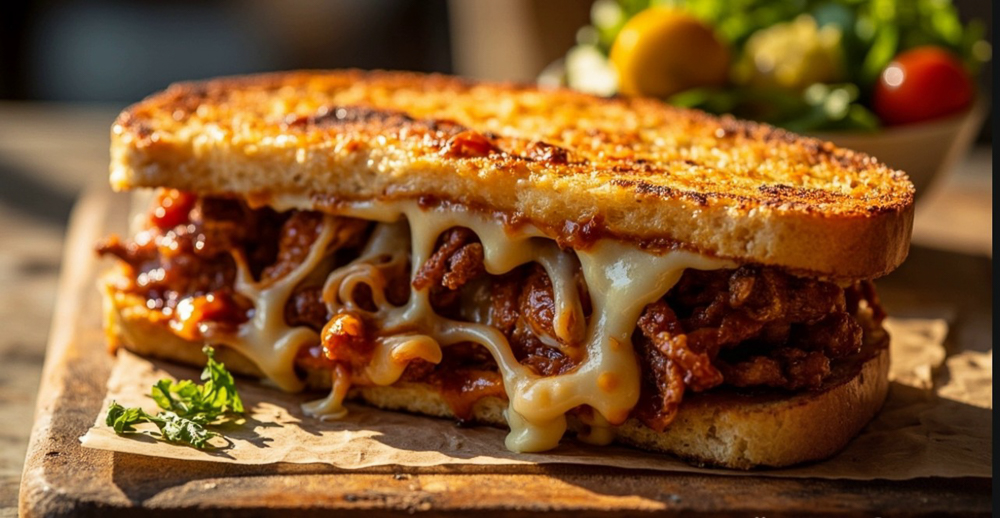
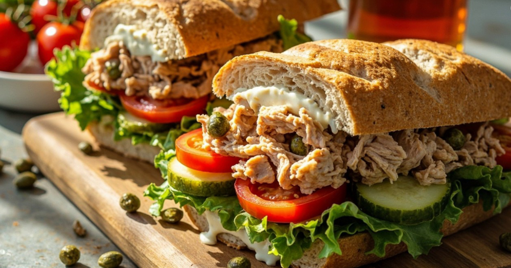
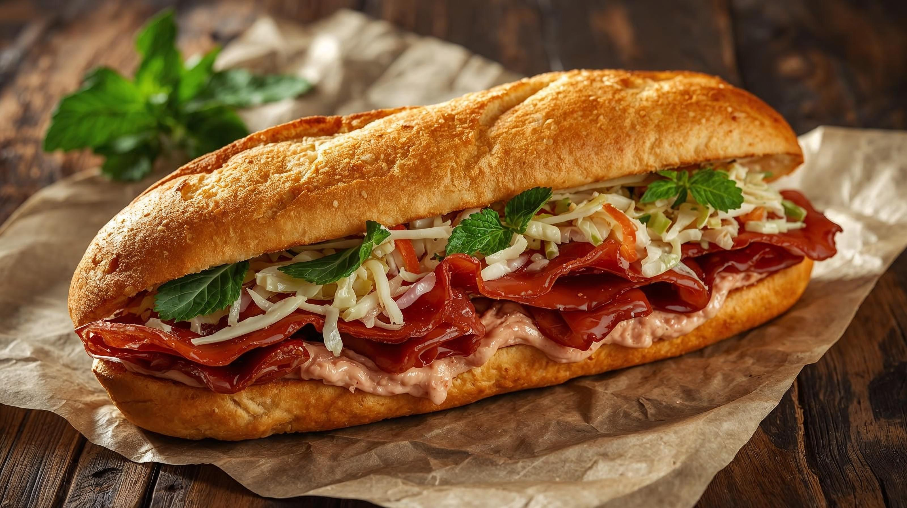
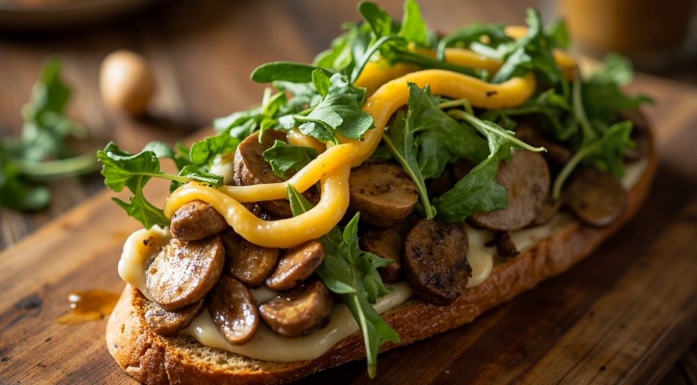
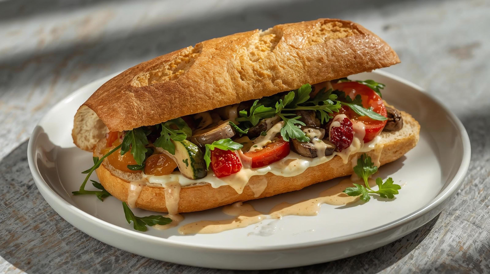

Kızarmış Ayvalık ekmeğinde; tahin helva, mevsim meyveleri, karamel sosu ile lezzet patlaması.

Hindi füme ve avokado püresinin taze roka, lor peyniri ve karamelize soğanla yakaladığı mükemmel uyum.

Füme dana jambon ve İtalyan sucuğu; taze roka, turşu ve eriyen kaşarın pesto ve barbekü sosla harmanlandığı vazgeçilmez lezzet.

Pastırma ve krem peynirin; haşlanmış yumurta, taze roka ve acı bal sosuyla fırınlanmış bagel içindeki uyumu.

Fırınlanmış patlıcan ve mozzarella peynirinin taze pesto sos, çeri domates ve rokayla buluşması.

Ayvalık ekmeğinde barbekü soslu tavuk ve eriyen kaşarın, taze rokayla yakaladığı çıtır ve leziz uyum.

Ton balığı ve kaparinin kuru domates, turşu, taze marul ve hardallı yoğurt sosuyla harmanlanan ferah uyumu.

Pastırma ve dana jambonun acuka, coleslaw salata ve taze naneyle yakaladığı zengin uyum.

Fıstıklı salam ve karamelize mantara eski kaşar, roka ve trüflü mayonezin eşlik ettiği dengeli bir lezzet.

Vegan peynir ve sebze soteyle kuru domates, taze roka ve ekşili tahin sosun sade birleşimi.